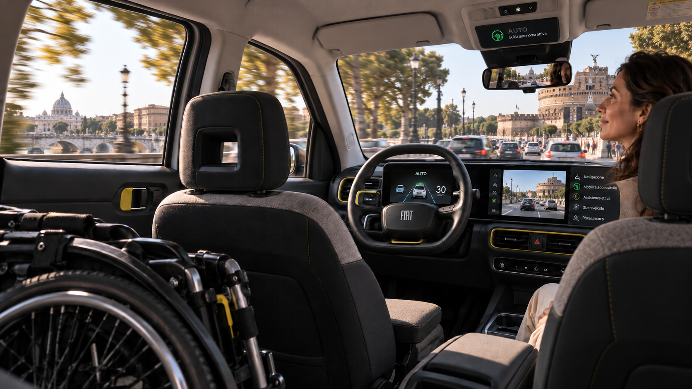

Per molto tempo la guida autonoma è sembrata appartenere soprattutto al mondo delle sperimentazioni: prototipi, test su percorsi limitati, immagini provenienti soprattutto dagli Stati Uniti o dalla Cina.
Ora qualcosa sta cambiando.
Il 17 settembre 2026 Bolt e Lucid Group hanno annunciato una partnership strategica per sviluppare e portare in Europa servizi di mobilità autonoma su larga scala. Bolt punta a impiegare almeno 25.000 veicoli autonomi Lucid in diverse città e Paesi europei, costruiti sulla futura piattaforma elettrica Midsize di Lucid e predisposti per la guida autonoma SAE di livello 4 attraverso l'architettura NVIDIA Hyperion.
Non significa che tra pochi mesi troveremo migliaia di robotaxi nelle nostre strade. Il progetto dovrà attraversare sviluppo industriale, sperimentazione, autorizzazioni, regolamentazione e adattamento alle complesse condizioni della mobilità europea.
Ma il numero annunciato è significativo.
La guida autonoma sta cominciando a uscire dalla sola fase sperimentale per confrontarsi con una dimensione industriale.
Bolt dichiara, infatti, un obiettivo ancora più ampio: arrivare a 100.000 veicoli autonomi sulla propria piattaforma entro il 2035.
Quando non poter guidare non significa più dipendere dagli altri
Per COINSIEME questa notizia interessa soprattutto per un altro motivo.
Pensiamo a una persona che non può conseguire la patente per una disabilità. A chi utilizza una carrozzina. A una persona non vedente. A chi, diventando anziano, non si sente più sicuro alla guida oppure deve rinunciarvi.
Oggi perdere la possibilità di guidare può significare perdere una parte importante della propria autonomia.
Per andare dal medico, incontrare un amico, raggiungere un luogo di lavoro, fare una commissione o semplicemente uscire quando lo si desidera, può diventare necessario chiedere aiuto a un familiare, utilizzare servizi specializzati o adattarsi agli orari e alla disponibilità di altri.
Un veicolo realmente autonomo introduce una possibilità completamente diversa:
se per spostarsi non sarà più necessario saper guidare, una delle tradizionali barriere alla mobilità personale potrebbe progressivamente scomparire.
Non si tratta soltanto di comodità. Può significare libertà di scelta.
La ricerca europea sta osservando con attenzione proprio questa prospettiva. Il Joint Research Centre della Commissione europea sottolinea che i veicoli autonomi potrebbero aumentare significativamente l'indipendenza di persone con disabilità e anziani, a condizione che l'accessibilità venga incorporata fin dall'inizio nella progettazione dei veicoli e dei servizi.
Autonomo non significa automaticamente accessibile
Qui occorre però evitare un equivoco.
Un'automobile può essere perfettamente capace di guidarsi da sola e continuare ad essere inutilizzabile da molte persone con disabilità.
Una persona in carrozzina deve poter entrare nel veicolo, sistemarsi e viaggiare in sicurezza. Una persona cieca deve poter identificare il mezzo e interagire con esso. Una persona anziana che non utilizza bene uno smartphone deve poter prenotare una corsa in un altro modo.
Occorrono quindi accessi adeguati, sistemi di ancoraggio, interfacce vocali e tattili, informazioni comprensibili, assistenza in caso di imprevisti e servizi di prenotazione realmente inclusivi.
La vera sfida, quindi, non sarà soltanto costruire automobili senza guidatore.
Sarà costruire servizi di mobilità senza barriere.
Una tecnologia che non riguarda soltanto la disabilità
Sarebbe però riduttivo considerare questa innovazione esclusivamente come una tecnologia assistiva.
La storia dell'innovazione mostra spesso che soluzioni sviluppate per superare un limite finiscono poi per migliorare la vita di tutti.
La guida autonoma potrebbe modificare il nostro rapporto con l'automobile.
Durante uno spostamento potremmo leggere, lavorare, parlare con qualcuno o semplicemente riposare. Le persone più anziane potrebbero continuare a muoversi autonomamente anche quando non fosse più prudente guidare. Famiglie con bambini potrebbero organizzare diversamente alcuni spostamenti. Le città potrebbero integrare trasporto pubblico, servizi a chiamata e veicoli autonomi.
E soprattutto potremmo cominciare a separare due concetti che per più di un secolo sono stati quasi coincidenti:
avere mobilità personale e saper guidare un'automobile.
È una trasformazione culturale prima ancora che tecnologica.
Il contributo dell'intelligenza artificiale
Dietro questa evoluzione c'è anche uno dei campi più concreti nei quali l'intelligenza artificiale sta incontrando il mondo fisico.
Un veicolo autonomo deve interpretare continuamente ciò che accade intorno a sé: pedoni, biciclette, automobili, semafori, ostacoli, condizioni stradali e comportamenti imprevedibili.
NVIDIA Hyperion, indicata nella collaborazione Bolt-Lucid, è un'architettura che combina capacità di elaborazione ad alte prestazioni e una serie standardizzata di sensori per lo sviluppo di sistemi di guida autonoma.
Il passaggio dalla sperimentazione all'utilizzo quotidiano richiederà naturalmente livelli elevatissimi di affidabilità, sicurezza e controllo pubblico.
In Europa esiste già un quadro normativo per l'omologazione dei sistemi di guida automatizzata dei veicoli completamente autonomi.
La prudenza quindi è necessaria.
Ma prudenza non dovrebbe significare diffidenza preventiva verso l'innovazione.
Guardare al futuro con cautela, ma anche con fiducia
Di fronte a trasformazioni di questa portata è comprensibile avere timori.
Accade ogni volta che una tecnologia modifica abitudini consolidate.
Dovremo interrogarci sulla sicurezza, sulle responsabilità in caso di incidente, sulla protezione dei dati, sul lavoro di chi oggi guida professionalmente, sull'accessibilità economica e sul rischio che l'innovazione produca nuove disuguaglianze invece di eliminarle.
Sono domande necessarie.
Ma insieme alla cautela dovremmo conservare anche la capacità di riconoscere le opportunità.
Chi oggi ha settant'anni potrebbe vedere nel corso della propria vecchiaia servizi che gli consentano di continuare a muoversi autonomamente anche quando non potrà o non vorrà più guidare.
Per le generazioni successive potrebbe diventare perfettamente normale chiamare un'automobile capace di arrivare da sola, accompagnarci a destinazione e ripartire verso un altro passeggero.
E per molte persone con disabilità potrebbe significare qualcosa ancora più importante: non dover chiedere a qualcuno di accompagnarle ogni volta che desiderano andare da qualche parte.
Questa è forse la prospettiva che vale maggiormente la pena seguire.
Non l'automobile che guida da sola come esercizio spettacolare della tecnologia, ma una tecnologia capace di restituire tempo, possibilità di scelta e indipendenza alle persone.
È anche per questo che COINSIEME continuerà ad osservare l'evoluzione della mobilità autonoma.
Non perché oggi rappresenti già una soluzione da proporre nei nostri progetti, ma perché imparare a riconoscere per tempo le tecnologie che potranno cambiare la vita quotidiana fa parte del nostro modo di intendere l'innovazione sociale.
Avvicinarsi al futuro con prudenza, certamente. Ma anche con curiosità e con un ragionevole ottimismo verso ciò che scienza, tecnologia e intelligenza artificiale potranno mettere a disposizione delle nuove generazioni — e della nostra stessa vecchiaia.